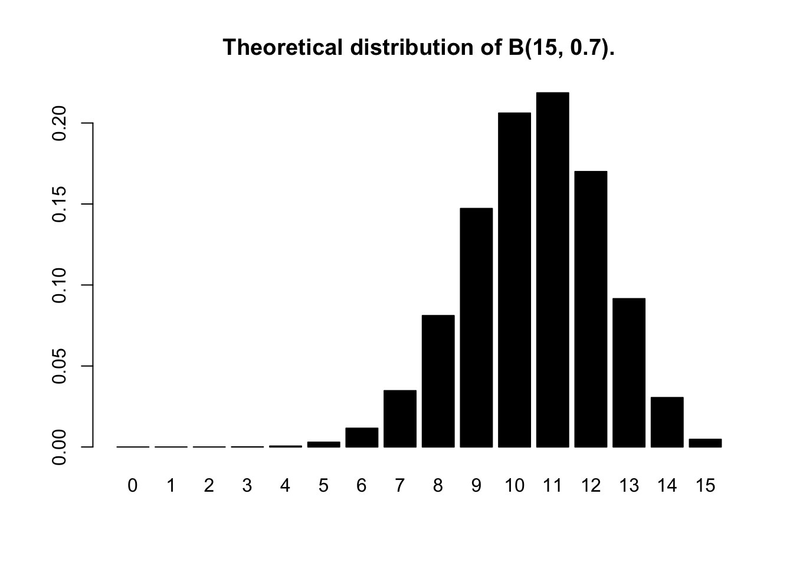

genotype = c("AA","AO","BB","AO","OO","AO","AA","BO","BO",
"AO","BB","AO","BO","AB","OO","AB","BB","AO","AO")
table(genotype)genotype
AA AB AO BB BO OO
2 2 7 3 3 2 Two events are independent if the occurence of one does not in any way inform us about the probability that the other will also occur.
Example: \(E_{1}\)=The first die rall is 3, and \(E_{2}\)=The second die roll is \(3\).
The multiplication rule states that when two events are independent, then the probability that they both occur is the product of their probabilities. That is, if \(E_{1}\) and \(E_{2}\) are independent, then \[P(E_{1} \text{ and } E_{2})=P(E_{1})P(E_{2})\]
Conditional probability is the probability of an event given that another event occurs.
Bayes’ theorem
\[P(A \mid B)=\frac{P(A \text{ and } B)}{P(B)}\]
The general multiplication rule
\[P(A \text{ and } B)=P(B)P(A\mid B)=P(A)P(B \mid A)\]
The law of total probability Let \(B_{1}, B_{2},...B_{n}\) n sets that partition (i.e \(1=\sum^{n}_{i=1}P(B_{i})\)) the sample space \[P(A)=\sum_{i=1}^{n}P(A \text{ and } B_{i})=\sum_{i=1}^{n}P(B_{i})P(A \mid B_{i})\]
One common use of conditional probability is sampling without replacement. That is when the occurrence of a specific outcome eliminates that outcome from the set of possibilities in subsequent random trials.
For example consider drawing cards randomly from a card deck (52 cards) shuffled. What is the probability of drawing three cards in the precise sequence “A-A-2”?
In contrast, when sampling with replacement, the sampled individual is not removed from the population.
When sampling populations for biological study, we usually choose populations that are large enough that the sampling of each individual does not change the probability distribution of possible values in the individuals that remain.
A random variable is simply a variable that takes on numerical values that depend on the outcome of a chance operation (random experiment).
Example. Consider the experiment to tossing a die. Let the random variable Y represent the number of spots showing. The possible values of Y are 1,..,6. We do not know the value of Y until we have tossed the die. We can then compute \[P(Y=4)\] and \[P(2\leq Y \leq 4)\]
Random variables come in two flavors: Discrete and Continuous.
The mean of a discrete random variable is: \[E(Y)=\sum_{i=1}^{n}y_{i}P(Y=y_{i})\] where \(y_{i}\)’s are the values that the variable takes on and the sum is taken over all n possible values that Y can take.
Example: Calculate the expected value of rolling a fair die once.
Rules: If X and Y are two random variables and Z=X+Y \[E(Z)=E(X+Y)=E(X)+E(Y)\] \[E(aX+b)=a E(X)+b\]
The variance of a discrete random variable is \[Var(Y)=\sum_{i=1}^{n} (y_{i}-E(Y))^2 P(Y=y_{i})\]
In many contexts-such as molecular biology-we count events (e.g., codons, DNA reads, CG diagrams), producing discrete variables, unlike continuous measures such as mass or intensity. Some variables are binary (e.g., mutation: yes/no), while others have multiple levels (e.g., genotypes AA, Aa, aa) or even many categories (e.g., bacterial types or 64 codons).
To summarize categorical data, we tally the frequency of each level. In R, these are stored as factors, which make tabulation straightforward. For example, here we capture the different blood genotypes for 19 subjects in a vector which we tabulate.
genotype = c("AA","AO","BB","AO","OO","AO","AA","BO","BO",
"AO","BB","AO","BO","AB","OO","AB","BB","AO","AO")
table(genotype)genotype
AA AB AO BB BO OO
2 2 7 3 3 2 If the order in which the data are observed does not matter, we call the random variable exchangeable. In this case, the vector of frequencies is sufficient to capture all the relevant information in the data, providing an efficient way to summarize it.
The Bernoulli distribution is the simplest probability model, based on a so-called Bernoulli random variable, which can take only two outcomes: failure or success. The key idea is that you have a parameter \(p\), which represents the probability of success, and the complementary event is called probability of failure \(1-p\):
Probability distribution:
\(P(X=1) = p\)
\(P(X=0) = 1-p\)
For a fair coin, p = 0.5. For a biased coin that lands heads 70% of the time, p = 0.7.
rbinom(15, prob = 0.5, size = 1) [1] 1 1 0 0 0 1 0 0 1 1 0 1 0 0 1Now observe the outcome when using a biased coin that lands heads 70% of the time:
rbinom(15, prob = 0.7, size = 1) [1] 1 1 1 0 1 0 0 1 1 1 1 1 1 1 1Question. Note that when you call the function above several times, you get different outcomes. Why is that?
Properties
The mean, or expected value, of a Bernoulli distribution is given by \(p\), and the variance is defined as \(p(1-p)\), so the variance is maximized when p = 0.5, and it goes to 0 as p approaches 0 or 1. The Bernoulli distribution is very important because it represents the building block of many other distributions.
In the previous example, if we are only interested in the number of heads (\(X=1\)), we just take the sum of the cells in the output vector, then reporting a single number instead of a binary vector. In R, we can do this as follows:
rbinom(1, prob = 0.7, size = 15)[1] 11The sum of multiple independent (or exchangeable) Bernoulli trials is called the Binomial distribution (in the example above, how many heads in 15 flips). That is, the number of successes in 15 Bernoulli trials with a probability of success of 0.7 is called a binomial random variable, or a random variable that follows the B(15, 0.7) distribution. We can generate binomial samples in R as follows:
set.seed(384569724)
rbinom(1, prob = 0.7, size = 15)[1] 11Question. Repeat this function call 10 times. What seems to be the most common outcome?
Solution. The most frequent value is 10.5\(\approx 11\). In fact, the theoretical proportion of times that we expect 10.5 to appear is the value of the probability that \(X=4\) if \(X\) follows B(15,0.7).
The complete probability mass distribution is available by typing:
probabilities = dbinom(0:15, prob = 0.7, size = 15)
round(probabilities, 2) [1] 0.00 0.00 0.00 0.00 0.00 0.00 0.01 0.03 0.08 0.15 0.21 0.22 0.17 0.09 0.03
[16] 0.00A barplot for this distribution in R, is as follows:
barplot(probabilities, names.arg = 0:15, col = "black", main = "Theoretical distribution of B(15, 0.7).")
Mathematically, the theoretical distribution of the binomial distribution is
Probability distribution:
\[P(X = k) = \binom{n}{k} p^k (1-p)^{n-k}, \quad k = 0, 1, \ldots, n,\] where \(n\) is the number of trials, \(k\) is the number of successes, \(p\) is the probability of success, and \(\binom{n}{k} = \frac{n!}{k!(n-k)!}\) is the binomial coefficient.
Properties
The mean of a Binomial distribution is given by \(n \cdot p\) (in the figure, the highest bar around \(x \approx 11\), or \(n(=15)\cdot p(=0.7)\), and the variance is defined as \(np(1-p) = (15)(0.7)(0.3) = 3.15\).
When the probability of success \(p\) is small and the number of trials \(n\) is large, the Binomial distribution can be approximated by a Poisson distribution with parameter \(\lambda = np\), which provides a simple model for describing the data.
Probability distribution:
\[P(X = k) = \frac{e^{-\lambda} \lambda^k}{k!}, \quad k = 0, 1, 2, \ldots,\] where \(k\) is the number of events, \(\lambda\) is the average number of events per interval, and \(e\approx 2.718\) is the Euler’s number.
Properties
An interesting characteristic of the Poisson distribution is that the mean and the variance are both equal to \(\lambda = np\).
In the Binomial model, we had only two possible outcomes, success and failure, with probabilities \(p\) and \(1-p\), respectively. How do we extend that model for more than 2 outcomes? For example, when studying counts of the four nucleotides in DNA: \(\{A, C, G, T\}\). We use a Multinomial model, where we assign different probabilities to the different outcomes. In the case of the four DNA nucleotides, for example, we can represent the respective probabilities as \(p_{A}\), \(p_{C}\), \(p_{G}\), and \(p_{T}\), where the probabilities sum to 1: \(p_{A}+p_{C}+p_{G}+p_{T}=1\), as in the Binomial model.
The mathematical formulation for the Multinomial model for \(m\) counts \((x_{1}, x_{2}, \ldots, x_{m})\) for outcomes of \(n\) draws with probabilities \(p_{1}, p_{2}, \ldots, p_{m}\) is as follows:
Probability distribution:
\[\begin{align} P(x_{1}, x_{2}, \ldots, x_{m}) &= \frac{n!}{\prod_{i=1}^{m} x_{i}!} \prod_{i=1}^{m} p_{i}^{x_{i}} \\ &= \binom{n}{x_{1}, x_{2}, \ldots, x_{m}} p_{1}^{x_{1}} p_{2}^{x_{2}} \cdots p_{m}^{x_{m}} \end{align}\]
To generate draws that are consistent with this model, we use R commands to generate vector counts with each having equal probability of selection (1/4 in the example of 4 nucleotides). For example, suppose we have 8 characters of four different equally likely types:
pvec = rep(1/4, 4)
t(rmultinom(1, prob = pvec, size = 8)) [,1] [,2] [,3] [,4]
[1,] 4 2 1 1Question Try the code without using the t() function; what does t stand for?
Reference: Holmes and Huber (2018)